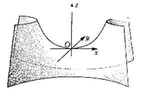

7.5.3.2. Гиперболический параболоид

Гиперболическим параболоидом называется поверхность
с каноническим уравнением
Каноническое
уравнение гиперболического параболоида
Сечение плоскостью  дает
скрещивающиеся прямые , сечения
дает
скрещивающиеся прямые , сечения  – гиперболы.
– гиперболы.
дает
скрещивающиеся прямые , сечения – гиперболы.При действительная
ось гиперболы параллельна оси , мнимая ось параллельна
оси  , при оси
меняются местами. Сечения плоскостями
, при оси
меняются местами. Сечения плоскостями  и
и
 – параболы.
– параболы.
, при оси
меняются местами. Сечения плоскостями и
– параболы.Как и однополостный гиперболоид, гиперболический
параболоид является линейчатой поверхностью и имеет два семейства прямолинейных
образующих – прямых, полностью лежащих внутри поверхности. Уравнения образующих
получаются аналогично случаю однополостного гиперболоида и имеют вид:
т.е. через каждую точку поверхности проходит две
прямолинейных образующих.
Это свойство гиперболического параболоида также
используется в строительных конструкциях: из прямолинейных металлических
элементов создается каркас кровли в форме гиперболического параболоида. Такая
поверхность, благодаря своей кривизне, обладает собственной жесткостью, тогда
как жесткость кровли традиционной формы - в виде совокупности плоских участков
– обеспечивается поддерживающими конструкциями (стропилами) и требует дополнительного
расхода материалов.